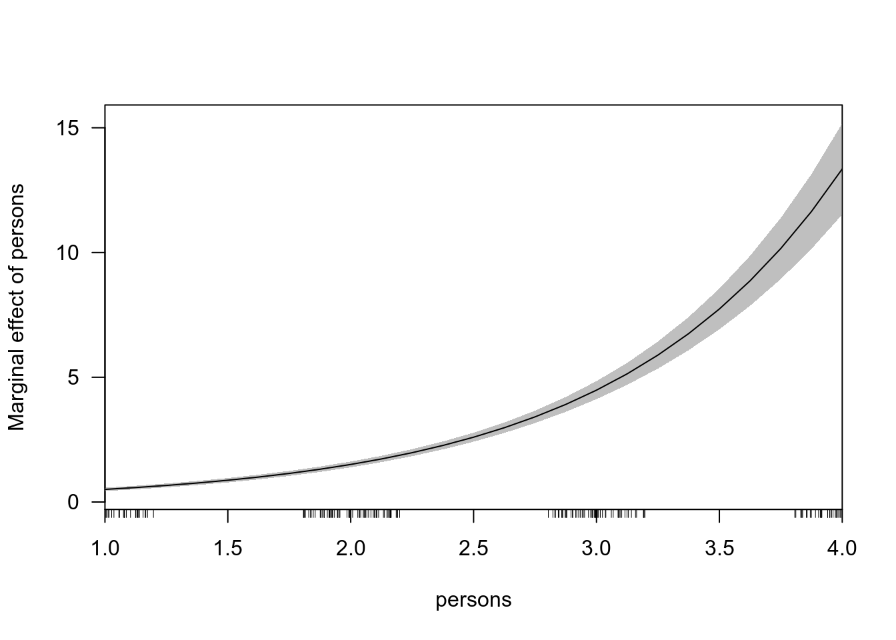

Коан 5 Модели счетных данных
5.1 R
Загрузим необходимые пакеты.
library(tidyverse) # манипуляции с данными и построение графиков
library(sjPlot) # визуализация моделей
library(skimr) # симпатичное summary
library(rio) # чтение .dta файлов
library(MASS) # отрицательное биномиальное распределение
library(lmtest) # проверка гипотез
library(pscl) # zero-inflation function
library(margins) # для подсчета предельных эффектовИмпортируем данные.
Данные содержат информацию о количестве рыбы, пойманной людьми на отдыхе.
Camper - наличие/отсутствие палатки. Child - количество детей, которых взяли на рыбалку. Persons - количество людей в группе. Count - количество пойманной рыбы
Посмотрим нам описательные статистики.
| Name | df_fish |
| Number of rows | 250 |
| Number of columns | 4 |
| _______________________ | |
| Column type frequency: | |
| numeric | 4 |
| ________________________ | |
| Group variables | None |
Variable type: numeric
| skim_variable | n_missing | complete_rate | mean | sd | p0 | p25 | p50 | p75 | p100 | hist |
|---|---|---|---|---|---|---|---|---|---|---|
| camper | 0 | 1 | 0.59 | 0.49 | 0 | 0 | 1 | 1 | 1 | ▆▁▁▁▇ |
| child | 0 | 1 | 0.68 | 0.85 | 0 | 0 | 0 | 1 | 3 | ▇▅▁▂▁ |
| count | 0 | 1 | 3.30 | 11.64 | 0 | 0 | 0 | 2 | 149 | ▇▁▁▁▁ |
| persons | 0 | 1 | 2.53 | 1.11 | 1 | 2 | 2 | 4 | 4 | ▆▇▁▆▇ |
Переменная camper принимает всего два значения, поэтому превратим ее в факторную переменную.
Наша задача - по имеющимся данным предсказать улов.
Для начала посмотрим на распределение объясняемой переменной count.
ggplot(df_fish, aes(x = count)) +
geom_histogram(binwidth = 1) +
labs(x = 'count', y = 'frequency', title = 'Distribution of count variable')
Предположим, что переменная имеет распределение Пуассона. Будем использовать пуассоновскую регрессию. \[ P(y=k)=exp(-\lambda) \lambda^k / k! \] где \(\lambda=\exp(b_1 +b_2*x)\)
poisson_model = glm(count ~ child + camper + persons, family = "poisson", data = df_fish)
summary(poisson_model)
Call:
glm(formula = count ~ child + camper + persons, family = "poisson",
data = df_fish)
Deviance Residuals:
Min 1Q Median 3Q Max
-6.8096 -1.4431 -0.9060 -0.0406 16.1417
Coefficients:
Estimate Std. Error z value Pr(>|z|)
(Intercept) -1.98183 0.15226 -13.02 <2e-16 ***
child -1.68996 0.08099 -20.87 <2e-16 ***
camper1 0.93094 0.08909 10.45 <2e-16 ***
persons 1.09126 0.03926 27.80 <2e-16 ***
---
Signif. codes: 0 '***' 0.001 '**' 0.01 '*' 0.05 '.' 0.1 ' ' 1
(Dispersion parameter for poisson family taken to be 1)
Null deviance: 2958.4 on 249 degrees of freedom
Residual deviance: 1337.1 on 246 degrees of freedom
AIC: 1682.1
Number of Fisher Scoring iterations: 6Посчитаем средний предельный эффект для каждой переменной.
factor AME SE z p lower upper
camper1 2.5815 0.2137 12.0800 0.0000 2.1626 3.0003
child -5.5701 0.3300 -16.8779 0.0000 -6.2169 -4.9233
persons 3.5968 0.1801 19.9697 0.0000 3.2438 3.9498
at(child) child persons camper1
0 -12.948 8.361 6.343
1 -2.389 1.543 1.171$child
$camper
$personsОднако, заметим, что дисперсия и среднее значение объясняемой переменной не равны, как это предполагает распределение Пуассона.
# A tibble: 2 x 3
camper var mean
<fct> <dbl> <dbl>
1 0 21.1 1.52
2 1 212. 4.54Оценим регрессию, предполагая отрицательное биномиальное распределение остатков. В этом случае, дисперсия распределения зависит от некоторого параметра и не равна среднему.
Call:
glm.nb(formula = count ~ child + camper + persons, data = df_fish,
init.theta = 0.4635287626, link = log)
Deviance Residuals:
Min 1Q Median 3Q Max
-1.6673 -0.9599 -0.6590 -0.0319 4.9433
Coefficients:
Estimate Std. Error z value Pr(>|z|)
(Intercept) -1.6250 0.3304 -4.918 8.74e-07 ***
child -1.7805 0.1850 -9.623 < 2e-16 ***
camper1 0.6211 0.2348 2.645 0.00816 **
persons 1.0608 0.1144 9.273 < 2e-16 ***
---
Signif. codes: 0 '***' 0.001 '**' 0.01 '*' 0.05 '.' 0.1 ' ' 1
(Dispersion parameter for Negative Binomial(0.4635) family taken to be 1)
Null deviance: 394.25 on 249 degrees of freedom
Residual deviance: 210.65 on 246 degrees of freedom
AIC: 820.44
Number of Fisher Scoring iterations: 1
Theta: 0.4635
Std. Err.: 0.0712
2 x log-likelihood: -810.4440 Попробуем исключить из модели переменную camper и сравним качество двух моделей.
Wald test
Model 1: count ~ child + camper + persons
Model 2: count ~ child + persons
Res.Df Df F Pr(>F)
1 246
2 247 -1 6.9979 0.008686 **
---
Signif. codes: 0 '***' 0.001 '**' 0.01 '*' 0.05 '.' 0.1 ' ' 1Можем посмотреть на результаты модели с “раздутыми нулями” (zero-inflated). Они предполагают большую частоту нулевых наблюдений.
zero_infl = zeroinfl(count ~ child + camper | persons, data = df_fish, dist = 'negbin')
summary(zero_infl)
Call:
zeroinfl(formula = count ~ child + camper | persons, data = df_fish,
dist = "negbin")
Pearson residuals:
Min 1Q Median 3Q Max
-0.5861 -0.4617 -0.3886 -0.1974 18.0135
Count model coefficients (negbin with log link):
Estimate Std. Error z value Pr(>|z|)
(Intercept) 1.3710 0.2561 5.353 8.64e-08 ***
child -1.5153 0.1956 -7.747 9.41e-15 ***
camper1 0.8791 0.2693 3.265 0.0011 **
Log(theta) -0.9854 0.1760 -5.600 2.14e-08 ***
Zero-inflation model coefficients (binomial with logit link):
Estimate Std. Error z value Pr(>|z|)
(Intercept) 1.6031 0.8365 1.916 0.0553 .
persons -1.6666 0.6793 -2.453 0.0142 *
---
Signif. codes: 0 '***' 0.001 '**' 0.01 '*' 0.05 '.' 0.1 ' ' 1
Theta = 0.3733
Number of iterations in BFGS optimization: 22
Log-likelihood: -432.9 on 6 Df$child
$camper